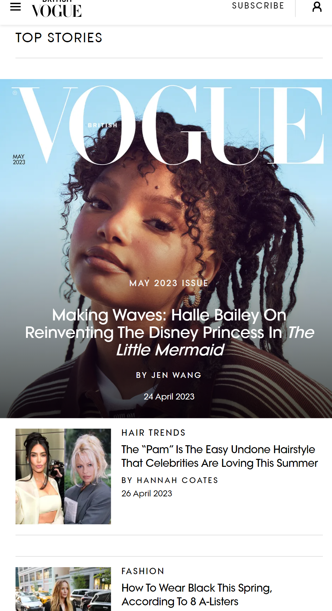
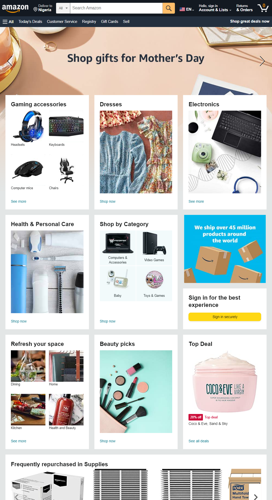

Visual Hierachy
Vogue Official Site The Britthish Vogue website is one example of magazine website using visual hierachy to promote contents that is trending which in turn will always captivate the mind of the users. I love how they make the headline story bigger and how they tend to make other older stories smaller.
White Space and Clean design
FreeCodeCamp Official SiteFreeCodeCamp uses good space and clean design to help visitors understand their mission. The text are simple and clear to read eith good spacing and alignment. Ipersonally love this site because of the simple design and easy ability to navigate through it.
Law of Proximity
Amazon Official Site Amazon uses the law of proximity to seperate items of diffrent nature and uses. Each card displays an items that can be viewed in details when clicked. The white spacing make sure that the images are not together so as to make the users quickly identify where to clicked based on their need.